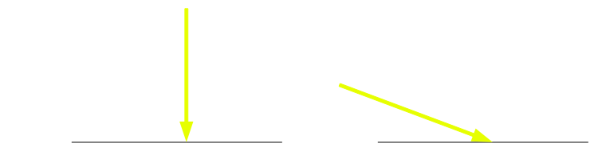
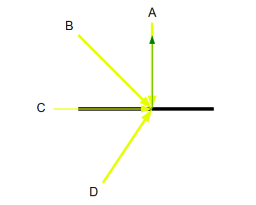
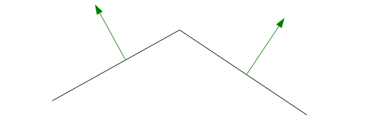
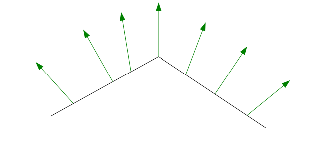

Background
The main difference between ambient light and diffuse light is the fact that diffuse light is dependent on the direction of the rays of light while ambient light ignores it completely. When only ambient light is present the entire scene is equally lit. Diffuse light makes the parts of objects that face the light brighter than the parts that are opposite from it.
Diffuse light also adds a twist where the angle by which the light strikes the surface determines the brightness of that surface. This concept is demonstrated by the following picture:
Let's assume that the strength of both light rays is the same and the only difference is their direction. The model of diffuse light says that the surface on the left will be brighter than the surface on the right because the surface on the right is hit at a sharper angle than the surface on the left. In fact, the surface on the left will be the brightest possible because the light there hits at an angle of 90 degrees.
The model of diffuse light is actually based on Lambert's cosine law that says that the intensity of light reflected from a surface is directly proportional to the cosine of the angle between the observer's line of sight and the surface normal. Note that we changed this a bit by using the direction of light instead of the observer's line of sight (which we will use in specular light).
To calculate the intensity of light in the diffuse model we are going to simply use the cosine of the angle between the light and the surface normal (whereas Lambert's law refers to the more general concept of 'directionaly proportional'). Consider the following picture:

We see four light rays hitting the surface at different angles. The surface normal is the green arrow pointing out from the surface. Light ray A has the greatest strength. The angle between A and the normal is zero and the cosine of zero is 1. This means that after we multiply the intensity of light (three channels of 0 to 1) by the color of the surface we will multiply by 1. We can't get any better than this with diffuse light. Light ray B hits the surface at an angle between 0 and 90. This means that the angle between B and the normal is also between 0 and 90 and the cosine of that angle is between 0 and 1. We will scale the result of the multiplication above by the cosine of that angle which means the intensity of light will definitely be less than light ray A.
Things become different with light rays C and D. C hits the surface directly from the side, at an angle of 0. The angle between C and the normal is exactly 90 degrees and the cosine is 0. This results in C having no effect on lighting the surface at all! The angle between D and the normal is obtuse which means the cosine is some negative number which is smaller than 0 and larger or equal to -1. The end result is the same as C - no effect on the surface brightness.
From this discussion we draw an important conclusion - in order to have any effect on the brightness of a surface the light must hit the surface such that the angle between it and the surface normal will be greater or equal to zero and up to (but not including!) 90 degrees.
We see that the surface normal plays an important part in the calculation of diffuse light. The examples above were very simple - the surface was a single line and there was only one normal to consider. In the real world we have objects that are composed of multiple polygon and the normal of each polygon is a bit different than the one next to it. Here's an example:

Since the normal is the same across the face of a polygon, it is enough to calculate the diffuse light in the vertex shader. All the three vertices in a triangle would have the same color and this will be the color of the entire triangle. However, this won't look too good. We will have a bunch of polygons where each one has a particular color which is slightly different than the one next to it and we will see how color breaks at the edges. This can definitely be improved.
The trick is to use a concept known as a 'vertex normal'. A vertex normal is the average of the normals of all the triangles that share the vertex. Instead of having the vertex shader calculate the diffuse light we only pass through the vertex normal as an attribute to the fragment shader and nothing more. The rasterizer will get three different normals and will need to interpolate between them. The fragement shader will be invoked for each pixel with the specific normal for this pixel. We can then calculate the diffuse light at the pixel level using that specific normal. The result will be a lighting effect which nicely changes across the triangle face and between neighboring triangles. This technique is known as Phong Shading. Here's how the vertex normals look like after interpolation:
You may find the pyramid model that we have been using in the last few tutorials a bit strange looking with those vertex normals and decide to stick with the original normals. This is OK. However, as models become more complex (and we will see that in the future) and their surfaces become smoother I think you will find the vertex normals more appropriate.
The only thing left to worry about is the coordinate space in which diffuse lighting calculations are going to take place. The vertices and their normals are specified in a local coordinate space and are transformed in the vertex shader all the way to clip space by the WVP matrix that we supply to the shader. However, specifying the direction of light in world space is the most logical course of action. After all, the direction of light is the result of some light source which is positioned in the world somewhere (even the sun is located in the "world", albeit many miles away) and sheds its light in a particular direction. Therefore, we will need to transform the normals to world space before the calculation.
Source walkthru
(lighting_technique.h:25)
struct DirectionalLight
{
Vector3f Color;
float AmbientIntensity;
Vector3f Direction;
float DiffuseIntensity;
};
This is the new DirectionalLight structure. There are two new members here: the direction is a 3 dimensional vector specified in world space and the intensity is a floating point number (will be used in the same way as the ambient intensity).
(lighting.vs)
#version 330
layout (location = 0) in vec3 Position;
layout (location = 1) in vec2 TexCoord;
layout (location = 2) in vec3 Normal;
uniform mat4 gWVP;
uniform mat4 gWorld;
out vec2 TexCoord0;
out vec3 Normal0;
void main()
{
gl_Position = gWVP * vec4(Position, 1.0);
TexCoord0 = TexCoord;
Normal0 = (gWorld * vec4(Normal, 0.0)).xyz;
}
This is the updated vertex shader. We have a new vertex attribute, the normal, that the application will need to supply. In addition, the world transformation has its own uniform variable and we will need to supply it in addition to the WVP matrix. The vertex shader transforms the normal to world space using the world matrix and passes it to the fragment shader. Note how the 3 dimensional normal is extended to a 4 dimensional vector, multiplied by the 4 dimensional world matrix and then reduced back to 3 dimensions using the notation (...).xyz. This capability of the GLSL language is called 'swizzling' and allows great flexibility in vector manipulations. For example, if you have a 3 dimensional vector v(1,2,3) you can write: vec4 n = v.zzyy and then vector n will contain (3,3,2,2). Remember that when we extend the normal from 3 to 4 dimensions we must place zero at the fourth component. This nullifies the effect of translation in the world matrix (the fourth column). The reason is that vectors cannot be moved like points. They can only be scaled or rotated.
(lighting.fs:1)
#version 330
in vec2 TexCoord0;
in vec3 Normal0;
out vec4 FragColor;
struct DirectionalLight
{
vec3 Color;
float AmbientIntensity;
float DiffuseIntensity;
vec3 Direction;
};
Here is the beginning of the fragment shader. It now receives the interpolated vertex normal that was transformed by the vertex shader to world space. The DirectionalLight structure was extended to match the one in the C++ code and contains the new light attributes.
(lighting.fs:19)
void main()
{
vec4 AmbientColor = vec4(gDirectionalLight.Color * gDirectionalLight.AmbientIntensity, 1.0f);
There is no change in the calculation of the ambient color factor. We calculate and store it here and use it in the final formula below.
float DiffuseFactor = dot(normalize(Normal0), -gDirectionalLight.Direction);
This is the core of the diffuse light calculation. We calculate the cosine of the angle between the light vector and the normal by doing a dot product between them. There are three things to note here:
- The normal passed from the vertex shader is normalized before it is used. This is because the interpolation the vector went through may have changed its length and it is no longer a unit vector.
- The light direction is reversed. If you think about this for a moment you will see that light that hits a surface at a right angle is actualy 180 degrees away from the surface normal (which simply points back at the light source). By reversing the direction of light in this case we get a vector which equals the normal. Therefore, the angle between them is zero, which is what we want.
- The light vector is not normalized. It will be a waste of GPU resources to normalize the same vector over and over again for all pixels. Instead, we make sure we normalize the vector the application passes is normalized before the draw call is made.
vec4 DiffuseColor;
if (DiffuseFactor > 0) {
DiffuseColor = vec4(gDirectionalLight.Color * gDirectionalLight.DiffuseIntensity * DiffuseFactor, 1.0f);
}
else {
DiffuseColor = vec4(0, 0, 0, 0);
}
Here we calculate the diffuse term which depends on the color of light, the diffuse intensity and the direction of light. If the diffuse factor is negative or equals to zero it means that light strikes the surface at an obtuse angle (either "from the side" or "from behind"). In that case the diffuse light has no effect and the DiffuseColor vector is initialized to zero. If the angle is greater than zero we calculate the diffuse color by multiplying the basic light color by the constant diffuse intensity and then scaling the result by the diffuse factor. If the angle between the light and the normal is 0 the diffuse factor will be 1 which will provide the maximum light strength.
FragColor = texture2D(gSampler, TexCoord0.xy) * (AmbientColor + DiffuseColor);
}
This is the final lighting calculation. We add the ambient and diffuse terms and multiply the result by the color which is sampled from the texture. Now you can see that even if diffuse light has no effect on the surface (due to direction), the ambient light can still light it up, if it exists.
(lighting_technique.cpp:144)
void LightingTechnique::SetDirectionalLight(const DirectionalLight& Light)
{
glUniform3f(m_dirLightLocation.Color, Light.Color.x, Light.Color.y, Light.Color.z);
glUniform1f(m_dirLightLocation.AmbientIntensity, Light.AmbientIntensity);
Vector3f Direction = Light.Direction;
Direction.Normalize();
glUniform3f(m_dirLightLocation.Direction, Direction.x, Direction.y, Direction.z);
glUniform1f(m_dirLightLocation.DiffuseIntensity, Light.DiffuseIntensity);
}
This function sets the parameters of the directional light into the shader. It was extended to cover the direction vector and the diffuse intensity. Note that the direction vector is normalized before it is set. The LightingTechnique class also fetches the direction and diffuse intensity uniform locations from the shader as well as the world matrix uniform location. There is also a function to set the world transformation matrix. All this stuff is pretty routine by now and the code is not quoted here. Check the source for more details.
(tutorial18.cpp:35)
struct Vertex
{
Vector3f m_pos;
Vector2f m_tex;
Vector3f m_normal;
Vertex() {}
Vertex(Vector3f pos, Vector2f tex)
{
m_pos = pos;
m_tex = tex;
m_normal = Vector3f(0.0f, 0.0f, 0.0f);
}
};
The updated Vertex structure now includes the normal. It is initialized automatically to zero by the constructor and we have a dedicated function that scans all the vertices and calculates the normals.
(tutorial18.cpp:197)
void CalcNormals(const unsigned int* pIndices, unsigned int IndexCount, Vertex* pVertices, unsigned int VertexCount)
{
for (unsigned int i = 0 ; i < IndexCount ; i += 3) {
unsigned int Index0 = pIndices[i];
unsigned int Index1 = pIndices[i + 1];
unsigned int Index2 = pIndices[i + 2];
Vector3f v1 = pVertices[Index1].m_pos - pVertices[Index0].m_pos;
Vector3f v2 = pVertices[Index2].m_pos - pVertices[Index0].m_pos;
Vector3f Normal = v1.Cross(v2);
Normal.Normalize();
pVertices[Index0].m_normal += Normal;
pVertices[Index1].m_normal += Normal;
pVertices[Index2].m_normal += Normal;
}
for (unsigned int i = 0 ; i < VertexCount ; i++) {
pVertices[i].m_normal.Normalize();
}
}
This function takes an array of vertices and indices, fetches the vertices of each triangle according to the indices and calculates its normal. In the first loop we only accumulate the normals into each of the three triangle vertices. For each triangle the normal is calculated as a cross product between the two edges that are coming out of the first vertex. Before accumulating the normal in the vertex we make sure we normalize it. The reaons is that the result of the cross product is not guaranteed to be of unit length. In the second loop we scan the array of vertices directly (since we don't care about the indices any more) and normalize the normal of each vertex. This operation is equivalent to averaging out the accumulated sum of normals and leaves us with a vertex normal that is of a unit length. This function is called before the vertex buffer is created in order to get the calculated vertex normals into the buffer along with the other vertex attributes.
(tutorial18.cpp:131)
const Matrix4f& WorldTransformation = p.GetWorldTrans();
m_pEffect->SetWorldMatrix(WorldTransformation);
...
glEnableVertexAttribArray(2);
...
glVertexAttribPointer(2, 3, GL_FLOAT, GL_FALSE, sizeof(Vertex), (const GLvoid*)20);
...
glDisableVertexAttribArray(2);
These are the main changes to the render loop. The pipeline class has a new function that provides the world transformation matrix (in addition to the WVP matrix). The world matrix is calculated as the multiplication of the scaling matrix by the rotation matrix and finally by the translation matrix. We enable and disable the third vertex attribute array and specify the offset of the normal within each vertex in the vertex buffer. The offset is 20 because the normal is preceded by the position (12 bytes) and the texture coordinates (8 bytes).
To complete the demo that we see in this tutorial's picture we must also specify the diffuse intensity and the light direction. This is done in the constructor of the Tutorial18 class. The diffuse intensity is set to 0.8 and the direction of light is from left to right. The ambient intensity was decreased all the way down to zero to amplify the effect of diffuse light. You can play with the keys 'z' and 'x' to control the diffuse intensity (as well as 'a' and 's' from the previous tutorial that governs ambient intensity).
Mathematical note
There are many sources online that tell you that you need the transpose of the inverse of the world matrix
in order to transform the normal vector. This is correct, however, we usually don't need to go
that far. Our world matrices are always orthogonal (their vectors are always orthogonal). Since the inverse
of an orthogonal matrix is equal to its transpose, the transpose of the inverse is actually the transpose
of the transpose, so we end up with the original matrix. As long as we avoid doing distortions (scaling one
axis differently than the rest) we are fine with the approach I presented above.
For more information on this subject check out the following video tutorial by Frahaan Hussain.
Next tutorial